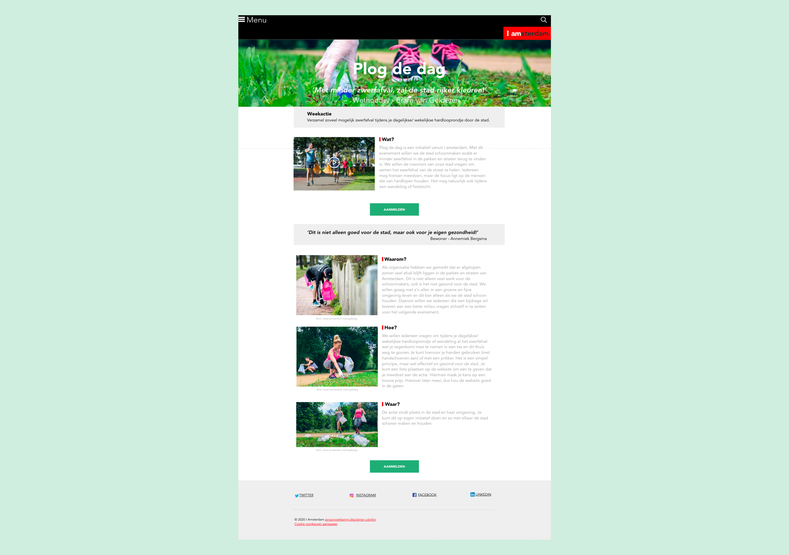

Vormgeving - Huisstijl
Het ontwerpen van een one page website met alle informatie van het evenement 'Plog de dag' van opdrachtgever I AMsterdam. Deze past in de huidige huisstijl en zal uiteindelijk een multidevice experience worden.
Cijfer: 8/10
Behaalde leerdoelen
- Een gebruiker algemene informatie makkelijk laten vinden
- De merkbeleving van de opdrachtgever versterken en vasthouden in de periode dat de gebruiker de website bezoekt
- Een 'ervaring' creëren en mensen het gevoel geven onderdeel te zijn van iets belangrijks.
- Een website responsive vormgeven